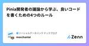
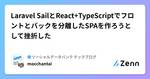
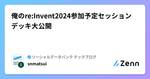
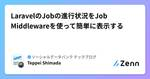

ソーシャルデータバンク テックブログのフィード
https://zenn.dev/p/sdb_blog
ソーシャルデータバンク株式会社の開発チームです。インフラ、品質、UI/UX、DevOpsなど様々な活動に取り組んでいます。
フィード

えっ！デザインって下ごしらえするとこんなに楽できるの！？
ソーシャルデータバンク テックブログのフィード
イントロ皆さんこんにちは。デザインチームの和田です。アプリでもサービスでもいい感じのデザインにしていくって、とても難しいですよね。いろんな人の意見を取り入れたら迷走したり、修正加えたら前の方が良かったと言われたり...デザインは料理と一緒で「事前の下ごしらえ」を挟むだけで作成・修正スピードが大幅にアップする話をしたいと思います。今回は以下の架空のモバイル求人サイトのデザインを修正していきながら解説していきたいと思います。 下ごしらえ3ステップ修正していくにあたり、「色がない」「配置を直さなきゃ」など、いろんな改善点が頭に思い浮かぶと思いますが、慌てて修正に走ってはい...
17時間前

振り返りの手法について調べてみた
ソーシャルデータバンク テックブログのフィード
はじめにSocial Databank Advent Calendar 2024 の7日目です。今回は振り返りの手法についていろいろ調べて見ましたので、それを記載したいと思います。まず、振り返り手法について調べようと思ったきっかけが、振り返りについて以下の課題感を持っていたからです。KPTを用いて振り返りを行っているが、毎回同じことをしているので形骸化していると感じる振り返りのアクションがなかなか出てこないアクションの担当者が毎回特定の人になりやすいアクションをやりたいという人が少ないこれらの課題の対策として、そもそも振り返りのやり方と変えれば、新鮮な気持ちにな...
2日前

鍵管理もSSMもいらない！？EC2 Instance Connect EndpointでローカルからRDSに接続する方法
ソーシャルデータバンク テックブログのフィード
Social Databank Advent Calendar 2024 の6日目です。 はじめにこんにちは😃 普段趣味でAWSを使用している学生です！！最近、RDSへの踏み台EC2をどこに建て、どのようにローカル接続するか迷っていました。まずは代表的な方法を調べてみました！SSHEC2にパブリックIPの割り当てが必要使用者ごとに秘密鍵の自己管理および公開鍵の登録が必要EC2がパブリックサブネットにあるためセキュリティグループによるIP制限が必要SSM Session ManagerプライベートなEC2に接続するためにはNATゲートウェイまたはVPCエンドポイ...
3日前

FormRequestでのユニーク制約に潜む落とし穴！Laravelで学ぶ責務分離を考慮したDBアクセス
ソーシャルデータバンク テックブログのフィード
!Laravel Advent Calendar 2024Social Databank Advent Calendar 2024の 5 日目です。 はじめにLaravel の FormRequest は、データのバリデーションを簡潔に実装できる便利な機能です。しかし、ユニーク制約のように データベース（DB） アクセスが必要なバリデーションでは、適切な層で処理を行わないと、システム設計に悪影響を与える可能性があります。本記事では、Laravel におけるユニーク制約を例に挙げ、設計思想を考慮した適切なデータ操作のアプローチについて解説します。 具体例例えば、use...
4日前

【Laravel11.x】ReverbでPusherを使わずにリアルタイム通信✨
ソーシャルデータバンク テックブログのフィード
!Laravel Advent Calendar 2024Social Databank Advent Calendar 2024 の4日目です。 はじめに初めまして、ソーシャルデータバンク株式会社でインターンとして働いているkanoooです。最新のLaravel11がリリースされてから８ヶ月以上経ちましたが、今回はLaravel11からの新機能「Reverb」について解説したいと思います。 Reverbとは今までLaravelでリアルタイム通信（リロード不要のチャットなど）を実装したい時はLaravel単独では実現できず、PusherといったWebSocketサー...
5日前

Pinia開発者の議論から学ぶ、良いコードを書くための4つのルール🍍 1
1
ソーシャルデータバンク テックブログのフィード
この記事では、PiniaのEslintに関するissueやDiscussionでの議論を通じて、どのように書き方を改善できるかを考えていきます！こんにちはmocchantaiです。Piniaは使ってないけど、Piniaが可愛いので布教したいと思っています。先日Piniaについて以下の記事を書きました。https://zenn.dev/sdb_blog/articles/006-pinia-tutorial今回参考にしたGithubのissueとdiscussionは以下の２つです。これらの内容を元に、読みやすく加工してみました。この記事をきっかけに、vuejs, pinia...
6日前

Laravel SailとReact+TypeScriptでフロントとバックを分離したSPAを作ろうとして挫折した😇 1
ソーシャルデータバンク テックブログのフィード
こんにちはmocchantaiです。少し前にチャレンジしたけど諦めちゃった時のメモを、成仏させようとブログ化してみました。もし成功した人がいれば知見を共有してくださると嬉しいです🙇♂️ 今回の目標バックエンドにLaravel Sail、フロントエンドにReact+TypeScriptを使ってSPAを作るフロントとバックのコードをfrontendとbackendディレクトリで分けるプロジェクトを1つのGitHubリポジトリで管理する フロントバックを分離したいモチベーションwebアプリ開発をLaravelから勉強し始めて、その後SPAをReactから勉強しました。...
6日前

俺のre:Invent2024参加予定セッションデッキ大公開
ソーシャルデータバンク テックブログのフィード
Social Databank Advent Calendar 2024 の2日目です。※記事中の画像は生成AIを用いて作成されています。なんと、本日から始まる AWS re:Invent へ現地参戦することになったので、私の予定表を公開します。 経歴AWS歴6年くらい好きなサービス: ECS, DynamoDB, ElastiCache, AthenaAWS Summit 2023 参加(1日)AWS Summit 2024 参加(1日)知っているサービスの内容であればLevel400のセッションも理解できる。AWS re:Inventは初参加1■年...
7日前

LaravelのJobの進行状況をJob Middlewareを使って簡単に表示する
ソーシャルデータバンク テックブログのフィード
!Laravel Advent Calendar 2024Social Databank Advent Calendar 2024の1日目です。今年もアドベントカレンダーの季節がやってきました。今回はLaravelのQueueにおける、非同期処理をする際に便利なJob Middlewareについての記事です。 Job MiddlewareとはJobの実行にあたって、Jobの実行を秒間xx回までにスロットルしたいJobを直列実行したい特定の条件下でJobの実行をスキップしたい等々、Jobのメインの処理ではなく、Jobを実行制御等を実装する場合があります。これ...
8日前

【Capacitor】タスキルしてもログイン状態を維持したい！
ソーシャルデータバンク テックブログのフィード
はじめにWeb ベースのコードを Capacitor でモバイルアプリに移行する際、ログイン状態を適切に管理する方法をご紹介します。Capacitor は Web アプリをモバイルアプリとして動作させるためのライブラリで、これにより Web 技術を使用してクロスプラットフォームなアプリを構築できます。私が所属しているサービスでは、Web 環境において Cookie を使用してログイン状態を維持していました。しかしモバイル環境では、タスクキルすると次回起動時にログイン状態がリセットされる問題が生じました。この問題を解決するため、@capacitor/preferences を使用...
16日前
【Laravel11】Bladeで簡単に改行を実装する方法（nl2br）
ソーシャルデータバンク テックブログのフィード
はじめにこんにちは！tatata-keshiです 😃今回は、LaravelのBladeテンプレート上で改行を表示する方法について解説します ✨ 環境OS: macOS Sonoma 14.6.1Laravel: 11.23.5PHP: 8.3.11 テキストが改行されない！Webアプリケーションを作成する中で、↓のように改行を含めたテキストを保存・表示させたいケースってありますよね？しかし実際に投稿されたテキストを表示させようとすると、このように改行されていたはずの投稿が改行されない😨という経験はありませんか？投稿を表示させるテ...
23日前
ソーシャルデータバンク x Vue Fes Japan 2024
ソーシャルデータバンク テックブログのフィード
はじめに先日開催された Vue Fes Japan 2024 に行ってきました！🎉弊社からは社員5名、インターン生3名の8名で参加しました。シルバースポンサーやランチセッションで登壇など、弊社でも初めての取り組みもあったのでここにその記録を残そうと思います。また、本記事は以下の7名で作成しています。kesojiわかShimadanagai男tatata-keshimocchantai ランチセッションでの登壇 初のシルバースポンサー (執筆 : kesoji)ソーシャルデータバンク株式会社開発部部長のkesojiです。Vue Fes Japan 2...
1ヶ月前
Piniaって可愛いよね。どこが可愛いか布教する
ソーシャルデータバンク テックブログのフィード
まずは見てほしいこちらがPiniaです。 Piniaとの出会い10/19(土)に Vue Fes Japan 2024 に参加して、登壇者の発表の中でPiniaを初めて知りました。最初にPiniaを見たとき、その可愛さに衝撃が走りました。僕が参加しているプロジェクトでは状態管理のパッケージを使っていなかったので使う機会がなかったのですが、Vue Fes Japanで出会ってからPiniaについてYoutubeで調べたり、Githubのリポジトリを眺めてみたり、ドキュメントをちょっとみてみたりしました。この記事ではとにかくPiniaが可愛いからみんなに広めたい。Pinia...
1ヶ月前
[Go] 独自のエラー型をerrorインタフェースを介さずに返すのは良くないという話
ソーシャルデータバンク テックブログのフィード
(公式のFAQ にこれが簡単にまとめられていることに後から気づいたのですが、日本語訳するくらいの気持ちで公開します)こんにちは😊 kesojiです。Goで以下のように「エラーに情報を付与して、かつ error インタフェースとして扱う」ことはよく行うかと思います。type MyError struct { origErr error Code int Message string}func (e *MyError) Error() string { return e.Message}func (e *MyError) Unwrap() e...
2ヶ月前
SLOって何？
ソーシャルデータバンク テックブログのフィード
はじめに現在ソーシャルデータバンクでは、SLOを取り入れることで品質の管理をしていこうとしています。しかしながら、私の方はSLOという用語は知っていても、どのように取り入れて管理していくのか知識が不足していました。そのため、今回の記事ではSLOにとって重要な要素である「SLI、SLA、エラーバジェット」について調べたことを解説していきたいと思います。（次回以降に実際の導入方法を記載したいと思います。）また、今回は参考資料として以下の本を利用しました。 SLO、SLA、SLIとは？ここではSLOと、SLOを構成する要素であるSLI、SLAについて解説していきます。...
3ヶ月前
E2Eテスト自動化、時代はノーコードorコードベース？
ソーシャルデータバンク テックブログのフィード
はじめに!この記事では以下の2つのツールを比較していますが、どちらかを下げたりする意図はありません！ 今回取り上げるツールMagicpodPlaywright そもそもこれらはなに？E2Eテスト自動化ツールのこと。 この2つの大きな違いノーコードツールかコードベースツールか有償か無償なのか 👽そもそもE2Eテストとはシステム全体を通してテストを行うことユーザと同じようにブラウザを操作し、挙動が期待通りになっているかを確認するテスト。 これらを使い比べて感想を述べてみたいと思います！※どちらのツールも初心者なのでこっちはこんなことが...
3ヶ月前
【作業効率化】お願いだからPCでの移動はこうしてくれ。
ソーシャルデータバンク テックブログのフィード
「目的の場所に最短で行け」これが本記事において、僕がもっとも伝えたいことです。アプリを開く。よく使うページを開く。タブを切り替える。パソコン作業で必ず発生するこれらの作業をトラックパッドや方向キーを使って行っているのであればぜひこの記事を読んで欲しいです。いつもの作業が数倍早くなることを約束します。 対象者Macユーザー新卒社会人や大学生でパソコン操作を速くしたい人 きっかけ同僚がパソコン作業しているのをみた時に「もっとこうしたらいいのに、、、」と思うことが頻繁にあり、これはまとめて教える人や機会がないのが悪いんだと思ったことがきっかけです。 基本的な考え方...
3ヶ月前
【FastAPI】環境変数の取得はキャッシュとPydanticのSettingsを使おう！
ソーシャルデータバンク テックブログのフィード
はじめに本記事の目的は、環境変数の取得においてパフォーマンス及び保守性・信頼性を向上させることです。今回はFastAPIにおいて、.envファイルで定義している環境変数を取得する際に、lru_cacheによってキャッシュを使用する方法を説明します。今までパフォーマンス面をあまりを気にしてこなかった方や、そもそも環境変数、キャッシュを知らない方にもわかりやすく説明するつもりです！また.envの取得をPydanticのSettingsを用いて一括管理します。保守性・信頼性をあまり考えたことがない方にも必見です。基本的にはこちらのFastAPI公式ドキュメントのSettings ...
4ヶ月前
[Github] Github Copilot Businessの利用状況を確認する
ソーシャルデータバンク テックブログのフィード
!AIツール「利用」の記事ではありません。Github Copilot Businessをメンバーに付与しているけど、使っているのかな？を確認するための方法です。こんにちは😊 kesojiです。冒頭にもかきましたが、AIツール利用方法の記事ではありません。弊社ではGithub Copilot Businessをそこそこ大きめなチーム(Github Organization内の「チーム」)に対して有効化しているのですが、ふと「あれ？このチーム、Github Copilotを業務で使わない人にも付与されているな？」と思ったので、棚卸しをしたくなりました。 さっそく方法利用す...
5ヶ月前
PHPでコレクションオブジェクト
ソーシャルデータバンク テックブログのフィード
今回のお話コレクションオブジェクト、もしくはファーストクラスオブジェクトと呼ばれるものについてお話をします。 配列やコレクションはコードを複雑にする同じ型のオブジェクトを複数持つ配列やコレクションを扱うコードは複雑になりがちです。こうした配列、コレクションを扱うロジックがコードに多くなり始めると、コードの可読性が下がることに繋がります。例えば架空のパーティの予約システムを考えてみましょう。このシステムはパーティの参加者(attendee)の情報に応じて様々なドメインロジックがあります。そのロジックたちの中には1予約における参加者(attendee)の集まりに対するロジ...
7ヶ月前